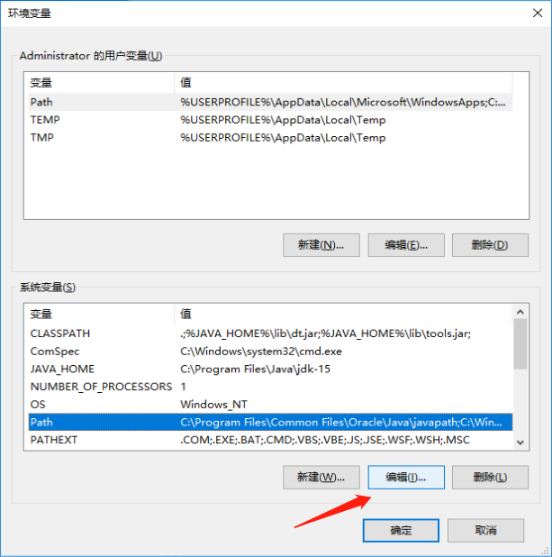
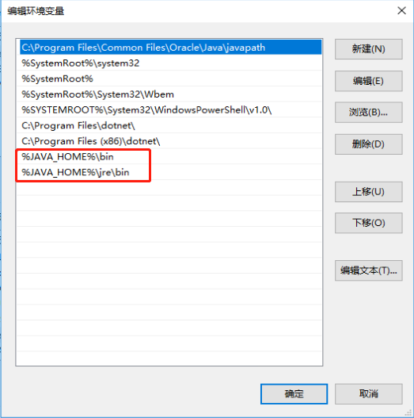
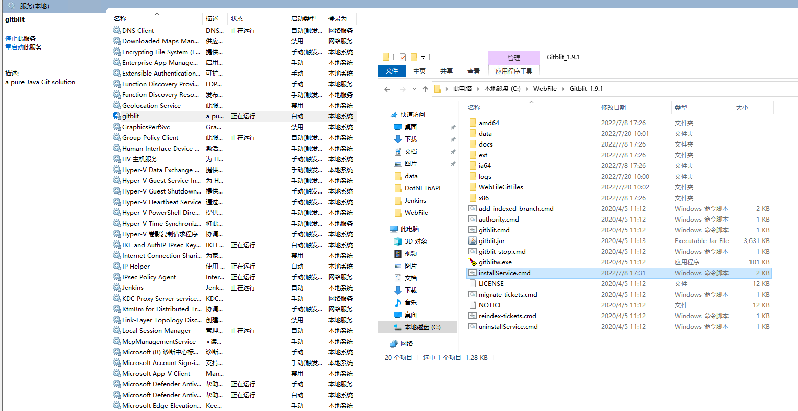

# 突然发现 GitLab 只能安装在 Linux 上，Windows 上的叫 GitBlit
# Windows 服务器搭建 GitBlit 需要安装 Java 环境
Java 环境下载
GitBlit-1.9.1.zip
# 下载 JavaJDK 并配置环境
# 此电脑 -> 属性 -> 高级系统设置 -> 环境变量 -> 系统变量 -> 新建
| 变量名：JAVA_HOME |
| 变量值：电脑上JDK安装的绝对路径 |
| 变量名：CLASSPATH |
| 变量值：.;%JAVA_HOME%\lib\dt.jar;%JAVA_HOME%\lib\tools.jar; |
# 选择系统变量 Path 这一列点编辑

# 然后新增两行

| %JAVA_HOME%\bin |
| %JAVA_HOME%\jre\bin |
# 打开 cmd 输入 java -version 查看版本号，没有错误说明安装成功
# 打开 data 文件夹编辑找到 defaults.properties 配置文件
| |
| |
| git.repositoriesFolder = Git仓库保存地址（默认在根目录git文件夹） |
| |
| |
| |
| server.httpPort = 端口号 |
| |
| |
| |
| server.httpBindInterface = 本机ipv4 |
| |
| server.certificateAlias = localhost |
# 修改 installService.cmd 文件
| @REM arch = x86, amd64, or ia32 |
| SET ARCH=amd64 |
| SET CD = C:\WebFile\GitBlit --(GitBlit解压后的路径) |
# 然后在命令窗口运行 gitblit.cmd（切记 cmd 窗口不能关闭）
# 第二种以服务的形式启动，双击运行 installService.cmd 就会在服务中新增一个 gitblit 服务
# 启动即可

# 最后以管理员账号登陆，就可以自己添加存储库了，然后自行拉取提交推送